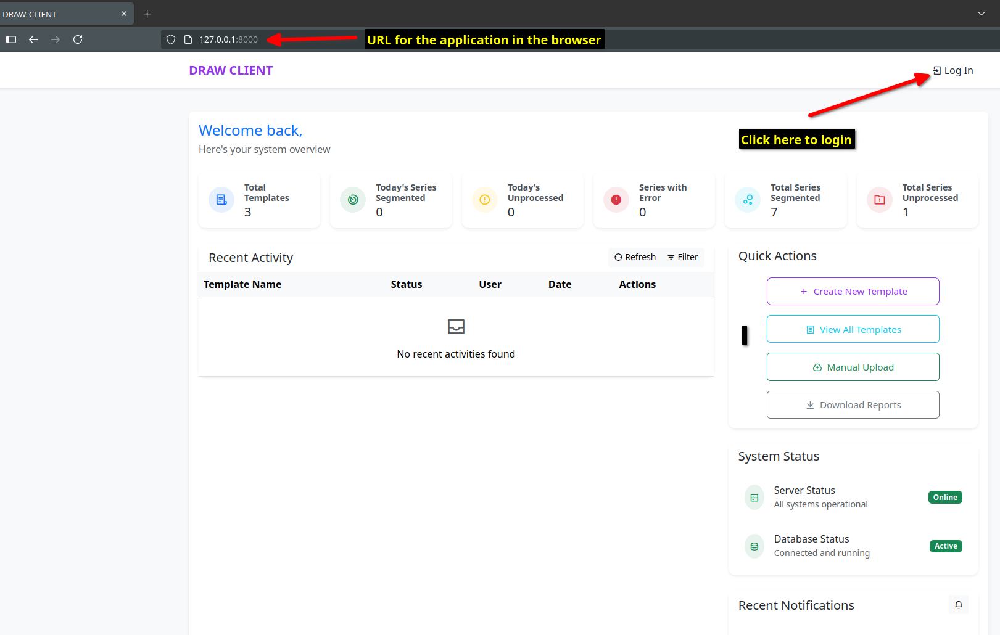
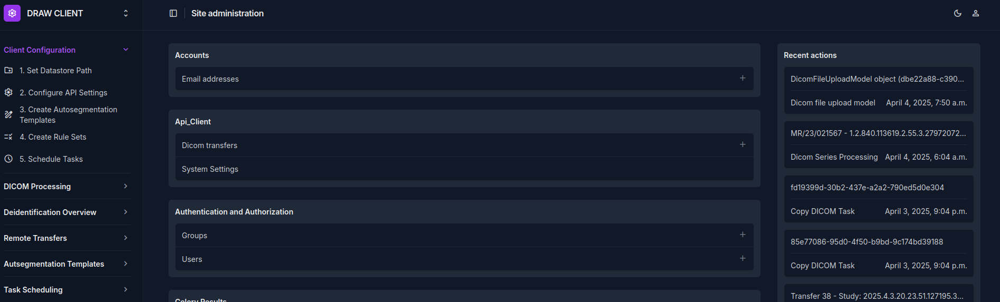

Configuration Steps
When you first access the DRAW Client on the browser, you will be shown a page like this:
{kind=link}
Click on the link titled Log In at the top right corner of the page. You will be redirected to a page where you can log in to the DRAW Client.
Please follow the following steps to configure the DRAW Client to ensure that the DRAW Client works as expected. These steps are shown in the Client Configuration section on the sidebar and has a list of tasks that need to be completed.
{kind=link}
Configure the datastore path (See the page Configuration of the Datastore path) : The datastore path is the path to the directory where the DRAW Client will read the DICOM data from. It also saves the RTStructureSet files to the directories inside this path. This path may a local folder or a shared network folder that has been mounted / mapped to the DRAW Client machine.
Get API tokens from the DRAW Server (See the page Get API tokens from the DRAW Server) : The API tokens are used to authenticate the DRAW Client with the DRAW Server. The API tokens are stored in the DRAW Client configuration file. The access token is used to authenticate the DRAW Client with the DRAW Server. The refresh token is used to refresh the access token.
Create Autosegmentation Templates (See the page Creating Autosegmentation Templates) : The autosegmentation templates are used to segment the data. These are stored as YAML files in a templates directory.
Configure the rulesets (See the page Configure Rules) : A ruleset comprises of a set of rules that are used to determine the autosegmentation template to use for a given DICOM data.
Schedule Periodic Tasks (See the page Setup Periodic Tasks) : The periodic tasks are used to schedule the autosegmentation tasks to run periodically.